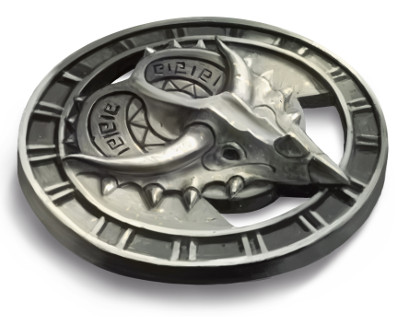

Port Nyanzaru
Port Nyanzaru, unique vraie ville de tout Chult, est située tout au sud de la baie de Chult. Les autres sites de la péninsule ne sont que des ruines ou des repaires de créatures monstrueuses. Port Nyanzaru était encore récemment sous le contrôle de l'Amn, une autre nation, mais il y a de cela neuf ans, l'Amn a été contraint de l'abandonner au profit d'un riche et puissant consortium de marchands Chultains soutenu par la Société Ytepka, afin d'éviter une guerre sanglante qui de toutes manières aurait assurément débouché sur l'indépendance de la cité. Depuis, Port Nyanzaru est dirigé par sept marchands Chultains convertis en d'influents princes marchands qui attirent la curiosité de toute la Côte des Épées.
Port Nyanzaru est un bastion de la civilisation et du commerce au sein d'un pays sauvage. Le niveau d'activité et l'argent qui s'y brasse rendrait tout commerçant de la Porte de Baldur ou de Waterdeep jaloux. C'est aussi une ville colorée et animée. Outre le commerce, la plus grande attraction sont les courses hebdomadaires de dinosaures dans les rues sur lesquelles les locaux et les visiteurs parient souvent des sommes énormes. La ville possède également de grands bazars, de magnifiques temples et demeures, des cirques et des tournois de gladiateurs. Mais tout n'est pas idyllique à Port Nyanzaru, qui est entouré d'ennemis. La jungle regorge de féroces reptiles et de morts-vivants, les pirates rôdent sur la mer environnante, et la bouche de la baie abrite un dragon-tortue affamé.
Port Nyanzaru est une ville de murs à l'intérieur des murs. Leur fortune a conduit les plus riches résidents de la ville à élever des défenses contre les dangers de la jungle mais aussi contre les menaces qu'ils perçoivent de la part des quartiers les moins favorisés, qui se trouvent maintenant à l'extérieur du mur principal. Ces murs sont d'impressionnantes barrières de pierres massives. Comme nombres d'autres structures à Port Nyanzaru, ils sont décorés de peintures colorées aux motifs géométriques, d'animaux et de figures mythiques.
POPULATION
Les Chultains représentent les deux tiers de la population de Port Nyanzaru. Le reste est composé d'étrangers, dont beaucoup sont des profiteurs ou des aventuriers qui cherchent à piller les richesses de Chult ou à protéger la ville contre les monstres environnants.
La ville possède quatre collines. La plus à l'ouest, appelée la colline du temple, abrite le temple de Savras [7]. Un grand pont en pierre relie la colline du temple à celle du trône, où se dresse le Trône d'or [4]. Un deuxième pont relie la colline du trône au sud, là on se situent plusieurs villas des princes marchands. À l'est du port, le Hall d'or [21] est érigée au sommet de la plus haute colline de la ville, le mont Sibasa, reliée par un pont à la colline d'Yklwazi, site du grand Colisée [20]. Des rues en pentes ou en escaliers et des terrasses entourent chaque colline.
En dehors des murs principaux se trouvent trois bidonvilles : la vieille ville au sud-ouest, où de nombreux bâtiments sont des restes d'une construction pyramidale plus ancienne ; la gorge de Malar au sud, où les bâtiments s'accrochent aux murs d'une gorge luxuriante bordée de ponts de corde ; et l'ancrage du Tiryki au sud-est, où les explorateurs et les gens de la rivière se rassemblent. Environ la moitié de la population de la ville vit à l'extérieur des murs, exposée aux attaques des carnivores ou des morts-vivants. Une brigade de citoyens bénévoles surveille la zone. Lorsque les résidents des quartiers extérieurs entendent sonner les cornes, de jour comme de nuit, ils se bousculent pour entrer dans les quartiers sûrs du marché ou des commerçants jusqu'à ce que la menace disparaisse.
La ville
{kind=link}
Carte de Mike Schley - 1500 x 2036
La vieille ville
Trois anciennes ziggourats couvertes de lianes s'élèvent au-dessus de ce quartier en ruines qui n'est qu'une juxtaposition de structures en pierre anciennes et en décomposition, mais toujours occupées, entrecoupées de huttes nouvelles et fragiles et de cabanes en bambou et en chaume. La vieille ville est dirigée par des « princes mendiants », une référence moqueuses aux princes marchands de la ville proprement dite. Ils n'ont aucune autorité officielle, mais chacun d'entre eux possède suffisamment d'informations compromettantes et de gros-bras pour pouvoir faire les choses avec une efficacité que même les princes marchands envient parfois. Contrairement aux princes marchands, qui doivent leur position à leur richesse qui passe de génération en génération au sein de la même famille, l'identité et même le nombre des princes mendiants changent continuellement. La vieille ville est en ruines, mais ce n'est pas un havre pour les voleurs. La plupart des résidents sont simplement des travailleurs de classe inférieure ou des artisans en difficulté qui ne peuvent pas se permettre les loyers plus élevés de maisons à l'intérieur des murs de la ville.
1. Palais des mendiants. Ce sont les deux plus grandes ziggourats de la vieille ville. On trouve sur leurs terrasses profusion de commerces et de maisons en bambou, même si les niveaux supérieurs sont plus propres et moins encombrés que ceux d'en-bas. Un étroit pont en bois relie les niveaux supérieurs des deux pyramides en passant au-dessus du bruit de la rue.
2. Cour du bourreau. La route qui traverse la vieille ville se divise autour d'une fosse rectangulaire de 4,50 mètres de profondeur sur 60 mètres de long. Construit par les anciens résidents d'Amn pour servir de terrain de jeu, la fosse offre encore actuellement des divertissements bon marché aux habitants. Vélociraptors, panthères et autres bêtes affamées y sont lâchés, suivis par des criminels reconnus. Tous les niveaux de la société de Port Nyanzaru, pas seulement les résidents de la vieille ville, s'alignent le long des murs pour assister aux spectacles, et parient sur les criminels qui vont survivre ou sur combien de personnes une bête va tuer. De temps en temps, un animal parvient à sauter hors de la fosse et vient terrifier la foule.
3. Cratère des ordures. Cet énorme cratère sert de décharge. Tous types de déchets y sont jetés, y compris les cadavres. Détritus, eaux rances, vermines, rats, insectes et corbeaux y abondent. Des goules rôdent parfois autour du cratère à la recherche de cadavres frais.
Le quartier des commerçants
La moitié ouest de la ville s'appelle le quartier des commerçants parce que c'est le site du Grand souk et parce que beaucoup de villas des princes marchands y sont établies. C'est le quartier de la classe supérieure de la ville. La majorité des commerçants de la ville vit et travaille en fait dans le quartier du marché.
4. Trône d'or. Ce palais sert de lieu de rencontre pour les princes marchands de Port Nyanzaru et est reconnu comme le siège du gouvernement de la ville. Construit il y a des décennies par un commerçant d'Amn, c'est l'une des structures les plus opulentes de la ville. Une garde de huit gladiateurs Chultains est toujours en service. Mais les princes marchands prenant peu part au quotidien dans le fonctionnement de ville, on ne les trouve pas fréquemment ici.
5. Villas des princes marchands. Chaque prince marchand possède sa villa privée en ville. Ces résidences sont magnifiques, ornées de peintures murales lumineuses, possèdent des jardins ouverts au ciel et de nombreuses fontaines.
6. Grand souk. Le Grand souk est, avec le marché des bijoux et le bazar rouge, l'un des trois cœurs battant de Port Nyanzaru. Des commerçants viennent ici de toute la Côte des Épées pour acheter du bois, des épices, des médicaments fabriqués à partir de plantes de la jungle, des crânes et des griffes de dinosaures, du fer, des peaux de tigre, de l'ivoire sculpté, des plumes colorées, des fruits tropicaux, des singes, de la viande de plésiosaure et toutes les autres richesses de Chult. Les affaires commencent avant que le soleil ne se lève et ne s'arrêtent pas avant la tombée de la nuit. C'est un cirque bruyant, en mouvement, et riche en arômes. Les gardes y sont nombreux, mais moins que les pickpockets. Les artistes de rue et les ménestrels tabaxis ajoutent à la cacophonie. Les toiles colorées protègent le marché du soleil et de la pluie, mais piègent la chaleur et les odeurs.
7. Temple de Savras. Savras est une divinité des magiciens, des diseuses de bonne aventure, des devins et de ceux qui disent la vérité, que les auditeurs aient ou non envie de l'entendre. Son symbole est un œil monstrueux ou une boule de cristal remplie d'yeux. Le temple de Savras est l'un des plus anciens et des plus grands bâtiments de la ville. Le toit en tuiles de son grand dôme ressemble à un œil qui regarderait le ciel. Une divinité consacrée à révéler la vérité peut sembler étrange dans une ville de commerçants, mais le clergé de Savras a depuis longtemps su se faire apprécier en surveillant les activités des yuan-ti. Le grand prêtre du temple se nomme Zitembe.
8. Temple de Gond. Le temple en pierre de Gond se trouve derrière les quais royaux. Il est populaire chez les nombreux artisans, forgerons, sculpteurs d'ivoire et ingénieurs de Port Nyanzaru. Si la plupart de ces temples possèdent une forge comme pièce maîtresse, celui-ci dispose d'une immense fontaine dont les jets d'eau se déplacent continuellement pour créer des formes étonnantes. Tout fonctionne avec des buses et des soupapes qui se déplacent sur des cames, entraînées par la pression de l'eau qui abonde de la ville.
9. Temple de Sunie. Isolé au sommet d'une formation rocheuse sur la mer, le temple de Sunie n'est accessible que par un pont depuis la colline du temple ou par bateau. Un escalier plutôt raide serpente par la falaise du petit port jusqu'au temple. Vu de loin, le toit du temple semble flotter dans les airs, une illusion créée par des miroirs sur les murs extérieurs. À l'intérieur, les visiteurs et les fidèles de Sunie peuvent avoir accès à des bains publics, prendre de cours de maquillage et de coiffure, et apprendre à s'habiller d'une manière qui convient au corps, à la profession et au caractère de l'individu.
10. Marché des bijoux. Ce marché est une version miniature et plus exclusive du Grand souk. L'activité principale consiste à acheter et à vendre les bijoux fabriqués à partir des richesses extraites des mines de Chult, mais de nombreux autres articles de luxe y sont également échangés. Ce marché est en grande partie protégé des pickpockets et des voleurs par des agents de sécurité privés qui le patrouillent ouvertement (gardes) ou infiltrés (espions). Tous travaillent pour le prince marchand Zhanthi, qui a le monopole du commerce des bijoux à Port Nyanzaru.
Le quartier du port
Le port de Port Nyanzaru peut accueillir des navires de toutes tailles. La partie fermée à l'est est réservée aux princes marchands, mais le reste des quais est disponible pour tout navire.
11. Quais royaux. Le terme « royal » remonte à l'âge où Chult était gouverné par de vrais rois et reines. Maintenant, ces quais sont réservés à l'usage exclusif des princes marchands et des diplomates, dignitaires et marchands étrangers influents que les princes marchands veulent flatter avec ce privilège ou impressionner par sa magnificence.
12. Statue. La statue au centre du port représente un ancien roi Chultain resplendissant dans un pagne de peaux de léopard avec sa coiffure de plumes, de coquilles et de dents de tyrannosaures, et brandissant le bouclier ovale traditionnel de Chult. Les locaux l'appellent Na N'buso, le Grand Roi. Mais la statue n'est pas aussi ancienne que le roi mythique qu'elle dépeint ; elle a été érigée il y a seulement cinq ans, pour impressionner les étrangers et faire savoir que Chult est une terre indépendante qui possède une histoire glorieuse. Peu de gens perçoivent le message toutefois.
13. Bureau du Maître du port. Sur les murs du bureau du Maître du port sont affichés le nom et l'adresse de plusieurs guides natifs. Le Maître du port est un demi-dragon d'or nommé Zindar. Il est rarement dans ce bâtiment, passant la majeure partie de son temps à gérer des conflits, des embouteillages et d'autres problèmes mineurs qui surviennent chaque jour sur un quai occupé. Zindar constate que sa présence personnelle imposante résout mieux et plus rapidement les problèmes que ne le feraient une dizaine de subordonnés.
14. Phare. La flamme du phare brûle jour et nuit pour guider les navires à travers l'obscurité, le brouillard et la pluie jusqu'au port. Différentes poudres peuvent être ajoutées au feu pour créer d'épaisses colonnes de fumée colorée qui peuvent être vues de Fort Beluarien ou des mines le long de la baie de Chult.
15. Fort Nyanzaru. Le fort possède un treuil qui permet de lever ou de baisser une immense chaîne en fer tendue entre le fort et le phare. Lorsque la chaîne est relevée, aucun navire ne peut entrer ou sortir du port. La chaîne n'a pas été relevée pour stopper des attaquants depuis des décennies, mais elle l'est parfois pour empêcher un navire de sortir du port avec des criminels ou de la contrebande à bord. Le fort est également équipé de deux balistes qui peuvent lancer de lourds carreaux ou des feux grégeois. Sa garnison se compose du castelain (noble), de quatre officiers (vétérans) et de quarante gardes tous loyaux envers les princes marchands.
16. Quartier des entrepôts. Les marchandises de tous types qui entrent ou sortent de Port Nyanzaru sont stockées dans ces entrepôts. Les canaux sont entrecoupés de rangées d'entrepôts, permettant aux navires d'être remorqués par des dinosaures directement dans l'entrepôt souhaité, afin de faciliter le chargement et le déchargement. Un grand navire peut facilement bloquer un canal, donc une bonne gestion du trafic est nécessaire, et c'est l'une des responsabilités du Maître du port. Cette zone est généralement déserte la nuit, ce qui en fait un bon endroit pour des réunions secrètes ou d'autres méfaits.
17. Cale sèche. Port Nyanzaru n'est pas reconnu pour la construction de navires, mais de nombreux bateaux qui viennent jusqu'ici nécessitent de faire réparer leur coque, en particulier ceux qui ont eu affaire à des tempêtes, des pirates ou avec le dragon-tortue Aremag. Il n'est pas compliqué pour les dinosaures de mettre ces navires en cale sèche afin que les trous puissent être nettoyés et réparés.
Le quartier du marché
Le quartier du marché est l'endroit où l'on trouve la plupart des magasins de Port Nyanzaru et où la plupart de ses commerçants et autres résidents de la classe moyenne vivent et travaillent.
18. Bazar rouge. Les habitants de Port Nyanzaru font leurs achats quotidiens au bazar rouge. Contrairement au Grand souk, qui propose des biens durables et des articles de luxe, le bazar rouge propose des produits basiques : viande, légumes, fruits tropicaux, tissus, produits pour faire fuir les insectes et autres articles ménagers. Les acheteurs et les vendeurs du bazar rouge sont principalement des locaux. Deux auberges notables sont situées près du bazar rouge : « Au grand Lézard », qui s'adresse à une clientèle rude et où un lit pour la nuit coûte 5 pa, et « Le repos de Kaya », beaucoup plus calme, mais où un lit pour la nuit coûte 1 po. Les guides sont connus pour fréquenter les deux établissements, à la recherche de travail.
19. Marché aux poissons. Les produits de la mer sont des aliments de base à Port Nyanzaru, parce qu'il est plus facile de pêcher des poissons que de chasser les dinosaures, mais aussi parce que le poisson frais a un bien meilleur goût que les reptiles. Le marché aux poissons est donc un excellent endroit pour acheter le repas de la journée. Les prix sont plus élevés le matin, lorsque la qualité est meilleure et l'offre plus large.
20. Grand Colisée. Cette arène en pierre est destinée aux jeux de gladiateurs, aux combats d'animaux et aux cirques spectaculaires. Les meilleurs gladiateurs deviennent des célébrités et gagnent des fortunes. Les statues des plus grands champions de l'arène sont alignées en haut des murs du Grand Colisée, y compris celle de l'un des princes marchands actuels. Des événements se déroulent généralement l'après-midi ; seuls les spectacles particuliers sont organisés après le coucher du soleil, car le Colisée dépend de la lumière naturelle. En semaine ont lieu les qualifications, les combats de consolation et d'autres petits événements. Les événements majeurs, les championnats et autres extravagances sont organisés durant les jours fériés. Cela peut être la simulation d'une bataille entre des « héros de la légende » et des « pirates » (joués par des gladiateurs), un combat sanglant entre des vélociraptors et des tigres, ou bien même un affrontement entre des magiciens et des goules, des squelettes ou des zombies capturés.
21. Hall d'or. Cette magnifique structure est un temple de Waukyne, mais les habitants l'appellent le Hall d'or pour son toit doré brillant et pour l'intérêt que Waukyne porte au commerce et à la richesse. Le mont Sibasa est le point le plus élevé de la ville et, lorsque le soleil brille, les reflets des rayons du soleil sur le toit du temple peuvent être vus à des kilomètres en mer. Certains habitants de la ville jurent que le toit est recouvert d'or massif, mais en réalité ce n'est que de la peinture. Un large pont en pierre relie le mont Sibasa au Grand Colisée sur la colline d'Yklwazi. Le grand prêtre de Waukyne à Port Nyanzaru est Sibonseni, la Mère de la Prospérité, l'une des habitantes les plus influentes de la ville après les princes marchands. Elle bénéficie d'un énorme soutien dans toutes les couches de la société pour le travail de charité du temple et pour son soutien à l'amélioration de la vie civique. Le temple est aussi l'une des plus riches banques de la ville.
22. Bains publics. Port Nyanzaru est une ville très propre grâce au nettoyage des pluies, et ses habitants sont également très scrupuleux en matière d'hygiène. La plupart sont choqués par la simple pensée d'un jour sans bain. Des dizaines de& thermes privés existent en ville, mais les bains publics sont ouverts à tous. Ils sont dirigés par un prêtre de Sunie. C'est un endroit de mixité sociale et d'élégance : les riches commerçants y côtoient les dockers dans des bains carrelés et des vestiaires en marbre. L'entrée est gratuite, mais les visiteurs sont invités à faire un don au temple de Sunie en fonction de leurs moyens. Les Chultains sont à juste titre fiers de cette installation, et même les plus pauvres s'efforcent de laisser au moins une pièce de cuivre dans la coquille géante à l'entrée. Beaucoup de masseurs et de masseuses indépendantes sont disponibles pour les muscles fatigués.
23. Teinturerie. En plus de la propreté, les Chultains aiment les vêtements colorés. Le tissage des textiles n'est pas une industrie ancestrale à Chult, car la jungle n'est pas adaptée à la culture du coton ou à l'élevage de moutons. Cependant, la jungle et la mer fournissent tout le nécessaire pour concocter des colorants vibrants. Les marchands importent des tissus légers et simples, les teignent avec des couleurs vives et des motifs colorés, puis les revendent localement ou les exportent vers les régions d'où le tissu est originaire. La falaise et la mer sous la teinturerie sont perpétuellement colorées en orange, en bleu, en rouge, en vert ou en jaune, selon les couleurs vidées des cuves ce jour-là. Les employées de la teinturerie sont facilement reconnaissables en ville à leurs pieds et leurs mains colorés.
La gorge de Malar
Cette zone à l'extérieur des murs de la ville est le quartier des bidonvilles de Port Nyanzaru. Deux arêtes drapées de jungle bordent un profond ravin. Les bâtiments s'accrochent aux crêtes, chaque structure semblant construite sur le toit d'une autre. Lors des fortes pluies, l'eau ruisselle dans le ravin, passe par les Mâchoires d'Ubtao, la grande porte de la ville face à la gorge de Malar, puis descend jusqu'aux rues pavées du port. Des ponts de corde et de bambou surplombent le ravin. Certains d'entre eux font plus de 60 mètres de long et se balancent 30 mètres au-dessus du vide ; terrifiant pour les âmes sensibles.
24. Temple de Tymora. Le temple de Tymora ressemble à une grande maison robuste construite avec de lourdes pierres. Ce n'est pas un bâtiment élégant, mais les habitants s'en servent de refuge lorsque l'eau se déverse dans la gorge de Malar ou lorsque les cornes d'alarme soufflent et qu'il n'y a plus assez de temps pour atteindre les murs de la ville avant que les morts-vivants n'envahissent le ravin. Les gens qui vivent dans la gorge de Malar ne se considèrent pas particulièrement chanceux, mais le peu de chance qu'ils ont, ils l'attribuent à la présence de la Dame parmi eux.
L'ancrage du Tiryki
Ce quartier à l'est de la ville est peuplé de dresseurs d'animaux, de gens de la rivière, d'explorateurs qui recherchent un hébergement peu coûteux et d'autres personnes... difficiles. Les contrebandiers préfèrent les quais non régulés de l'ancrage aux quais contrôlés et inspectés du port, malgré la pénurie de dockers et l'absence de grues pour aider au chargement et au déchargement des marchandises. Contrairement à la gorge de Malar et à la vieille ville, l'ancrage du Tiryki n'a pas de temple fortifié ou de ziggourats de pierre ancienne où les résidents peuvent se réfugier en cas d'attaques de morts-vivants ou de monstres carnivores. La plupart des gens se rusent vers la porte du Tiryki lorsque l'alarme retentit.
25. Enclos des dinosaures. La plupart des bêtes de somme utilisées en ville ont été dressées ici, et y sont enfermés la nuit. Les ankylosaures et les tricératops sont les plus communs pour cette tâche. Les dinosaures entraînés pour les courses dans les rues sont également gardés ici.
Les princes marchants
Sept princes marchands, tous Chultains, gouvernent Port Nyanzaru, chacun ayant un vote. Ce sont les sept personnes les plus riches de la ville. Leur siège de gouvernement est le Trône d'Or, un ancien palais royal amnien qui surplombe la baie. Un prince marchand qui se retire peut céder son poste à un membre de sa famille ou à une autre personne suffisamment riche pour être accepté par la majorité. Les princes marchands s'entourent de leur famille et de sous-intendants fidèles, mais ils emploient aussi des mercenaires étrangers à la fois comme gardes de la ville ou comme gardes personnels. Les princes marchands ont le monopole de certaines marchandises vendues en ville. La seule alternative sont les marchés noirs de la gorge de Malar ou de l'ancrage du Tiryki.
Les sept princes marchands actuels sont : Ekene-Afa (armes, boucliers, chariots, selles), Ifan Talro’a (bêtes et dressage), Jessamine (plantes, poisons), Jobal (guides, mercenaires), Kwayothé (vins, parfums, huiles), Wakanga O’tamu (magie) et Zhanthi (bijoux et pierres précieuses, vêtements, armures).
Ekene-Afa
Ifan Talro’a
Jessamine
Jobal
Kwayothé
Wakanga O’tamu
Zhanthi
La Société Ytepka
La Société Ytepka, également connue sous le nom de la Société des tricératops, est basée à Port Nyanzaru et se consacre à empêcher tout individu ou groupe d'abuser du pouvoir et de bouleverser l'ordre social. Ses membres sont avant tout des Chultains. À bien des égards, les objectifs de la société sont semblables à ceux des Ménestrels. La Société Ytepka a contribué à libérer Port Nyanzaru des puissances étrangères et à faciliter l’émergence des sept princes marchands. Ses membres travaillent maintenant sans relâche pour empêcher le Zhentarim et d'autres factions douteuses d'atteindre le gouvernement ou d'avoir une influence sur celui-ci. Les Ytepkas travaillent également secrètement pour éliminer la menace des pirates, mais ils n'ont pas encore été en mesure de localiser leur base. À l'heure actuelle, il y a moins de cinquante membres actifs de la Société Ytepka, qui n'affichent par leur appartenance, mais s'identifient les uns les autres en utilisant un geste simple avec la main gauche : les trois doigts du milieu dressés, représentant les trois cornes des tricératops.
Traduit par blueace